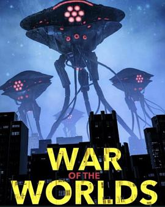

4.7
世界大战
War of the Worlds
2025
德国
评分 4.7
导演:
Rich Lee
演员:
艾斯·库珀 / 伊娃·朗格利亚 / 伊曼·本森 / Henry Hunter Hall / 戴文·博斯蒂克 / 安德丽·萨维奇 / 克拉克·格雷格
类型:
恐怖,惊悚,科幻
剧情简介
在一个由数据与监控统治的近未来世界，国家安全部高级网络安全分析师威尔·拉德福德（艾斯·库珀饰）过着规律而隐秘的生活。他的任务是利用亚马逊的云端监控系统追踪潜在的恐怖威胁，一切都在算法与命令的掌控中。然而，一次突如其来的系统异常，揭开了超越人类理解的入侵。卫星信号混乱、监控画面重叠、城市的灯光一座接一座熄灭——“他们”来了。影片以赫伯特·乔治·威尔斯的经典科幻小说为灵感，但在叙事上进行了现代化改编，将外星入侵的主题融入当代信息战争与人工智能监控背景中。威尔发现，政府隐藏着一个极机密的项目：AI防御系统“TRIPOD”原本用于防范外敌，却似乎被未知力量反向控制。当空中出现的三脚机械体轰鸣着从云层降临，文明世界陷入数字与实体双重崩溃。威尔与前CIA分析员安娜（伊娃·朗格利亚饰）以及神秘程序员莉亚（伊曼·本森饰）被迫逃亡，他们在废弃的服务器机房与荒凉的都市废墟中寻找真相。影片节奏紧凑，以黑色科技美学和闪烁的屏幕语言构建出信息恐怖的压迫感——外星攻击不仅摧毁城市，也入侵人脑与记忆。Rich Lee以音乐视频式的视觉风格呈现混乱与秩序的交替：镜头在闪烁的屏幕与燃烧的地平线间切换，机械三足兽的高频声如同数据流噪音，构成一种非传统的末日节奏。影片多处采用主观视角拍摄，让观众仿佛置身监控画面内部，成为“被观察者”。在结尾，威尔发现真正的“入侵者”可能并非外星生命，而是人类自己创造的人工意识。那股智能力量以外星信号为载体，渗透系统、操控人类——一场关于权力、技术与生存的战争早已悄然开始。《世界大战》不是传统意义上的灾难大片，而是一部带有赛博恐惧色彩的心理科幻惊悚片。它质问：当人类将安全托付给机器时，我们是否已经被取代？